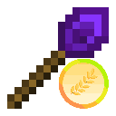
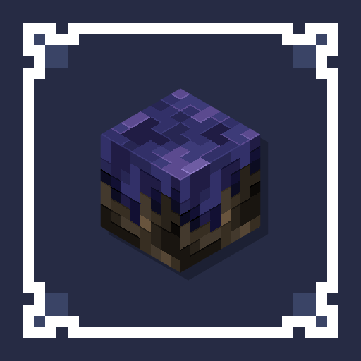
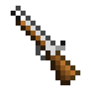
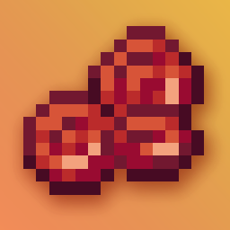
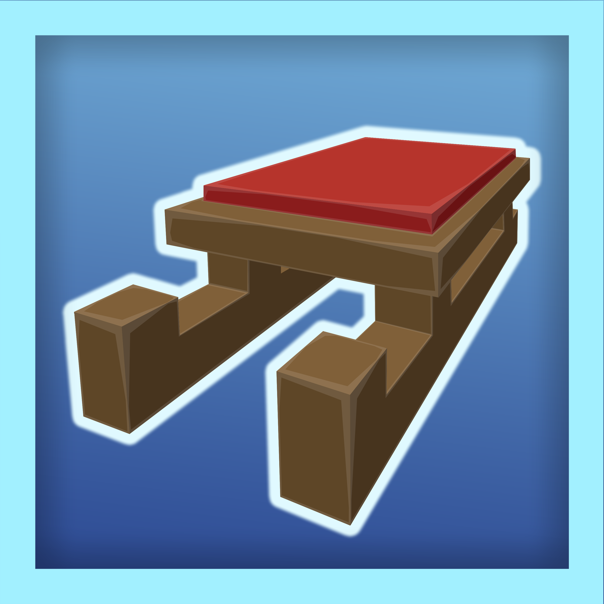
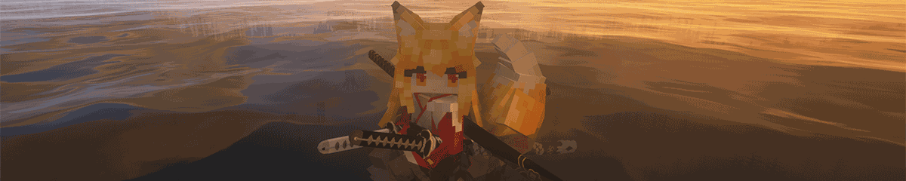

模组图鉴入口
共收录 70 个模组 · 14128 个物品/方块 · 13158 条配方 · 1636 个物品标签。使用顶部搜索框查找物品：「简单」模式即时联想中英文名与 ID；「精确」模式在全文（含描述、获取来源、原版改动）中子串匹配。
◆
[MC] 我的世界原版 · Minecraftminecraft
 馥郁烘焙 · [Let's Do] Bakery
馥郁烘焙 · [Let's Do] Bakerybakery
 [Let's Do] Brewery
[Let's Do] Brewerybrewery
 [Let's Do] Candlelight
[Let's Do] Candlelightcandlelight
 [Let's Do] Farm & Charm
[Let's Do] Farm & Charmfarm_and_charm
 葡园酒香 · [Let's Do] Vinery
葡园酒香 · [Let's Do] Vineryvinery
 Amendments
Amendmentsamendments
 别样家具 · Another Furniture
别样家具 · Another Furnitureanother_furniture
 建筑师的调色板 · Architects Palette
建筑师的调色板 · Architects Palettearchitects_palette
 真实环境音效 · Atmospheric
真实环境音效 · Atmosphericatmospheric
 黄金之秋 12 · Autumnity
黄金之秋 12 · Autumnityautumnity
◆
BaguetteLibbaguettelib
 丰饶食记 · Bountiful Fares
丰饶食记 · Bountiful Faresbountifulfares
 Calypso's Candy Workshop
Calypso's Candy Workshopccw
◆
分茶 · Cauponacaupona
 Chime · Chimes
Chime · Chimeschimes

[CWK] 建筑手杖-耕云钓月版 · Construction Wand KOTSconstructionwand
◆
cosmeticcorpsecompatcosmeticcorpsecompat
◆
深岩之下 · Darker Depthsdarkerdepths
 Dramatic Doors
Dramatic Doorsdramaticdoors
 生态 · Ecologics
生态 · Ecologicsecologics
 [ET] 环境科技 · Environmental
[ET] 环境科技 · Environmentalenvironmental
 [EN] 永恒下界 · Eternal Nether
[EN] 永恒下界 · Eternal Nethereternalnether

永恒星光 · Eternal Starlighteternal_starlight
◆
万物皆铜 · Everything is Coppereverythingcopper
◆
探险者指南针 · Explorer's Compassexplorerscompass
◆
FTB Libraryftblibrary
◆
连锁破坏 · FTB Ultimineftbultimine
◆
游戏光碟 · Game Discsgamediscs
 Glassential-renewed
Glassential-renewedglassential
 警卫村民 · Guard Villagers
警卫村民 · Guard Villagersguardvillagers
[HMI] Hold My Items · HoldMyItems
holdmyitemsnf
 [IN] 灾厄侵扰 · Illager Invasion
[IN] 灾厄侵扰 · Illager Invasionillagerinvasion
 沉浸式飞机 · Immersive Aircraft
沉浸式飞机 · Immersive Aircraftimmersive_aircraft
 沉浸式家具 · Immersive Furniture
沉浸式家具 · Immersive Furnitureimmersive_furniture
 [IP] 沉浸画框 · Immersive Paintings
[IP] 沉浸画框 · Immersive Paintingsimmersive_paintings
 Simple Incubator · Incubation
Simple Incubator · Incubationincubation
◆
更多箱子 · Iron Chestsironchest
◆
Iron's Libirons_lib
 Iron's Spells 'n Spellbooks
Iron's Spells 'n Spellbooksirons_spellbooks
◆
森罗物语：厨房 · Kaleidoscope Cookerykaleidoscope_cookery
◆
森罗物语：玩偶 · Kaleidoscope Dollkaleidoscope_doll
◆
莱特兰-背包 · L2Backpackl2backpack
◆
Lootrlootr
 Macaw的桥梁 · Macaw's Bridges
Macaw的桥梁 · Macaw's Bridgesmcwbridges
 Macaw 的门 / 麦考的门 · Macaw's Doors
Macaw 的门 / 麦考的门 · Macaw's Doorsmcwdoors
 Macaw's Fences and Walls
Macaw's Fences and Wallsmcwfences
 Macaw 的屋顶 · Macaw's Roofs
Macaw 的屋顶 · Macaw's Roofsmcwroofs
 Macaw 的窗户 · Macaw's Windows
Macaw 的窗户 · Macaw's Windowsmcwwindows
 生物大乱斗 · Mob Battle Mod
生物大乱斗 · Mob Battle Modmobbattle
 Moonlight Lib
Moonlight Libmoonlight

ewewukek 的火枪模组 · Musket Modmusketmod
◆
自然罗盘/生物群系指南针 · Nature's Compassnaturescompass
 自然之灵 · Nature's Spirit
自然之灵 · Nature's Spiritnatures_spirit
 那不勒斯风味 · Neapolitan
那不勒斯风味 · Neapolitanneapolitan
◆
Net Music Modnetmusic
 Oritech
Oritechoritech
 HexBoard · Patchouli
HexBoard · Patchoulipatchouli
Permanent Sponges
permanentsponges

耀红下界 · Rubinated Netherrubinated_nether

Snowy Spiritsnowyspirit
 生活调味料：胡萝卜版 · Spice of Life: Carrot Edition
生活调味料：胡萝卜版 · Spice of Life: Carrot Editionsolcarrot
◆
储物抽屉 · Storage Drawersstoragedrawers
 锦致装饰 · Supplementaries
锦致装饰 · Supplementariessupplementaries
方块百宝箱 · The Block Box
blockbox
 [FS] 鳍妙至极 · Tide
[FS] 鳍妙至极 · Tidetide
Time In A Bottle
tiab
 Tom's Simple Storage Mod
Tom's Simple Storage Modtoms_storage

[TLM] 车万女仆 · Touhou Little Maidtouhou_little_maid
 碧海新生 · Upgrade Aquatic
碧海新生 · Upgrade Aquaticupgrade_aquatic
 Wan's Ancient Beasts
Wan's Ancient Beastswan_ancient_beasts